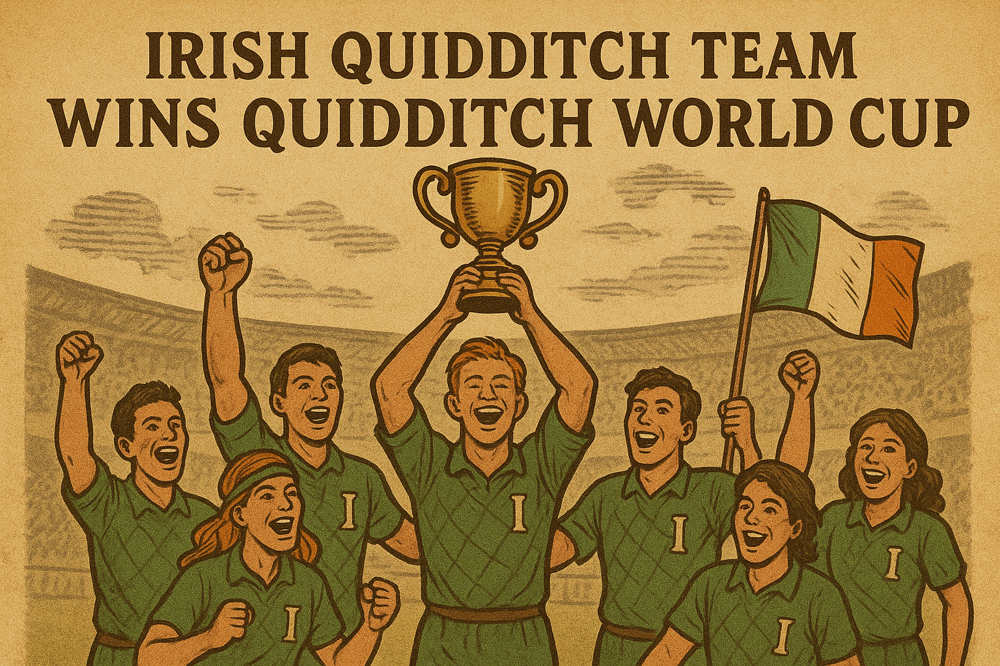

En una final inolvidable, la Selección de Irlanda venció a Bulgaria y se coronó campeona del Mundial de Quidditch. El partido estuvo marcado por jugadas espectaculares, una afición entregada y el brillo de la nueva Firebolt 2.0.

Entre cánticos, fuegos artificiales y un estadio a reventar, la Selección Nacional de Irlanda se alzó con el título de Campeona del Mundo de Quidditch, derrotando a Bulgaria en un duelo que quedará grabado en la memoria de todos los seguidores del deporte mágico.
Desde el inicio, Irlanda mostró un juego sólido y elegante, con su trío de cazadores desplegando una coordinación impecable que desarmó la defensa búlgara en repetidas ocasiones. Las espectaculares atajadas de su guardián, Seamus O’Dwyer, fueron clave para mantener a raya los cañonazos de los cazadores rivales.
Pero la ovación más ensordecedora llegó cuando el buscador irlandés, Aidan Lynch Jr., descendiente del célebre jugador homónimo, capturó la Snitch Dorada tras una persecución de vértigo contra Viktor Krum. Con esta jugada, Irlanda selló el marcador en 230 a 180, logrando así su segundo campeonato mundial en la historia.
Los festejos estallaron no solo en el estadio, sino también en pueblos y ciudades mágicas de toda Irlanda, donde las calles se tiñeron de verde y las banderas ondearon hasta entrada la madrugada. “Es un sueño hecho realidad para nuestro país”, declaró entre lágrimas el capitán Patrick Connolly, levantando el trofeo de plata bajo una lluvia de luces encantadas.
Cabe destacar que el equipo irlandés estrenó la Firebolt 2.0 durante el torneo, y muchos expertos señalan que el rendimiento de la nueva escoba fue determinante en la velocidad y precisión de los jugadores.
La victoria de Irlanda no solo marca un hito deportivo, sino también cultural: una generación entera de jóvenes magos y brujas ahora sueña con vestir de verde y volar algún día en un mundial.
“Hoy Irlanda ha hecho historia en el cielo”, tituló en portada el Profeta Diario. Y los hinchas, con orgullo desbordante, parecen estar totalmente de acuerdo.